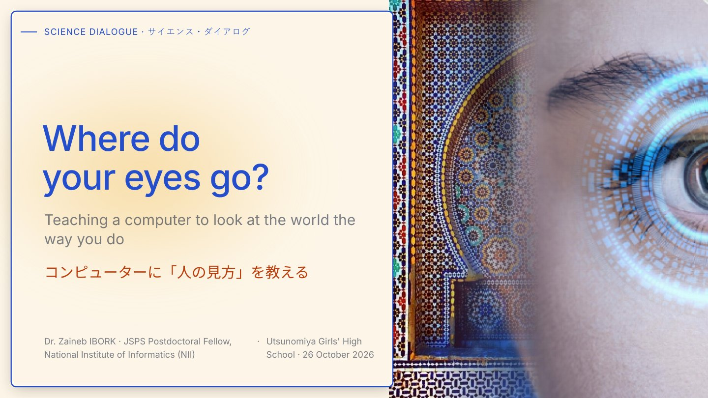

Teaching a computer to look at the world the way you do
コンピューターに「人の見方」を教える

The JSPS Science Dialogue Program invites JSPS Fellows to give lectures in English at Japanese high schools, to spark students' interest in research and show science from a global perspective.
This lecture was for first-year students at Utsunomiya Girls' High School. It had three aims: to encourage the students to take an interest in research and in learning English, to show them the path of a researcher, and to introduce them to Morocco.
The lecture was interactive throughout. The students took part in real subjective tests: they judged the quality of 3D meshes, and they found where their own eyes went first on a 3D model (visual saliency).
Students' faces are hidden to protect their privacy.